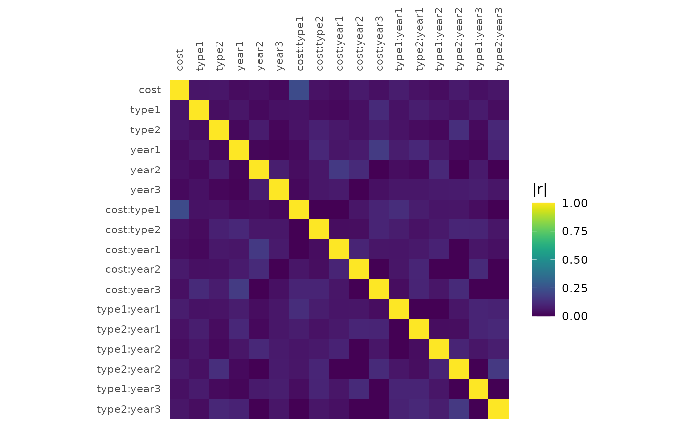
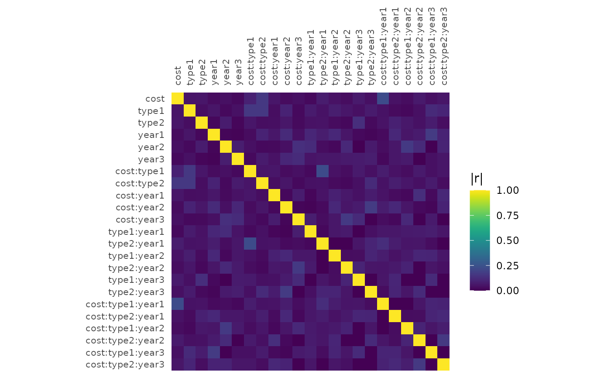
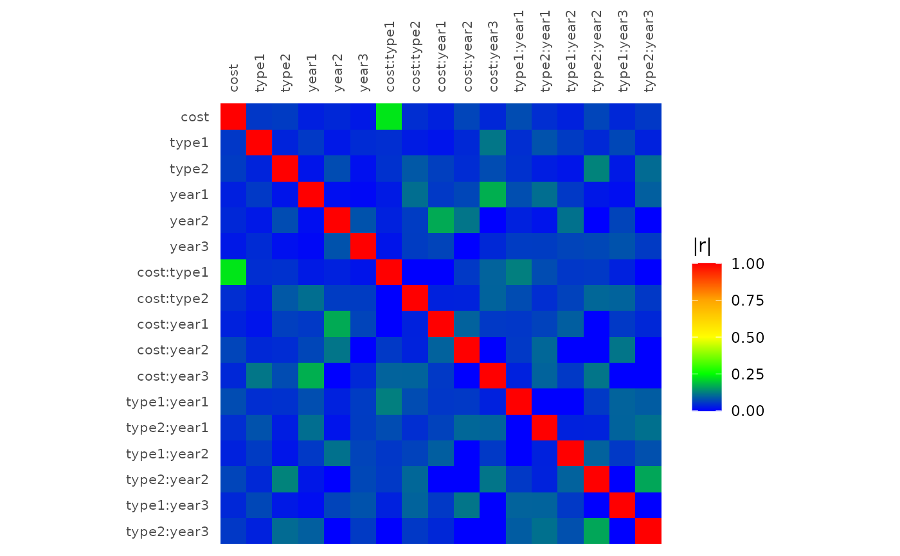
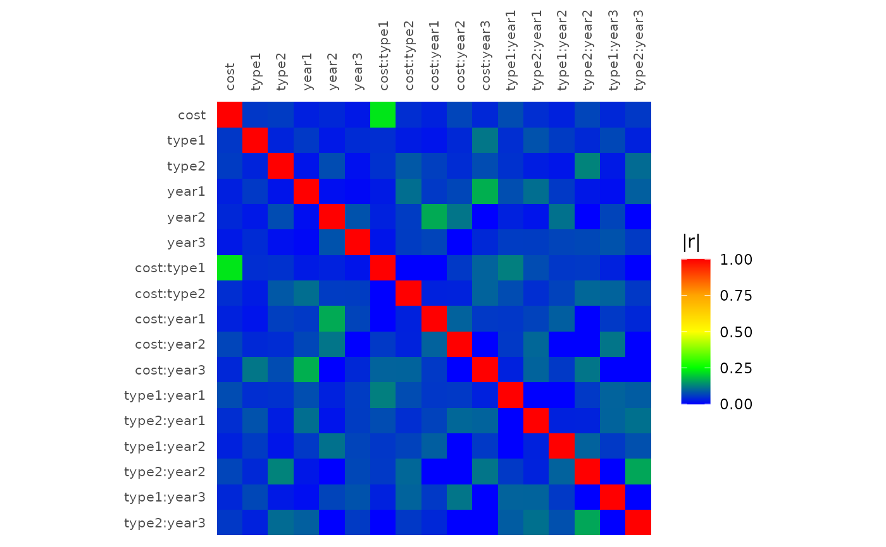

Plots design diagnostics
Usage
plot_correlations(
genoutput,
model = NULL,
customcolors = NULL,
pow = 2,
custompar = NULL,
standardize = TRUE
)Arguments
- genoutput
The output of either gen_design or eval_design/eval_design_mc
- model
Default `NULL`. Defaults to the model used in generating/evaluating the design, augmented with 2-factor interactions. If specified, it will override the default model used to generate/evaluate the design.
- customcolors
A vector of colors for customizing the appearance of the colormap
- pow
Default 2. The interaction level that the correlation map is showing.
- custompar
Default NULL. Custom parameters to pass to the `par` function for base R plotting.
- standardize
Default `TRUE`. Whether to standardize (scale to -1 and 1 and center) the continuous numeric columns. Not standardizing the numeric columns can increase multi-collinearity (predictors that are correlated with other predictors in the model).
Examples
#We can pass either the output of gen_design or eval_design to plot_correlations
#in order to obtain the correlation map. Passing the output of eval_design is useful
#if you want to plot the correlation map from an externally generated design.
#First generate the design:
candidatelist = expand.grid(cost = c(15000, 20000), year = c("2001", "2002", "2003", "2004"),
type = c("SUV", "Sedan", "Hybrid"))
cardesign = gen_design(candidatelist, ~(cost+type+year)^2, 30)
plot_correlations(cardesign)

#We can also increase the level of interactions that are shown by default.
plot_correlations(cardesign, pow = 3)

#You can also pass in a custom color map.
plot_correlations(cardesign, customcolors = c("blue", "grey", "red"))
 plot_correlations(cardesign, customcolors = c("blue", "green", "yellow", "orange", "red"))

plot_correlations(cardesign, customcolors = c("blue", "green", "yellow", "orange", "red"))
